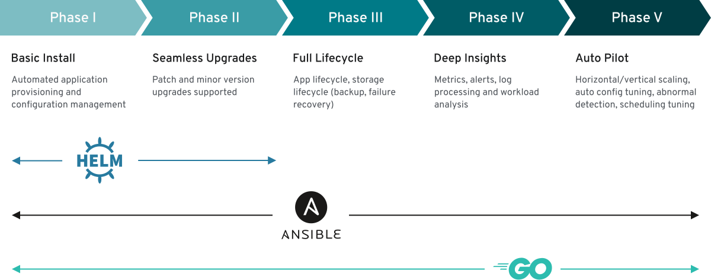

It wasn’t my first time flying. It also wasn’t the first time I had arrived at the airport early enough to require multiple cups of coffee. As I sat at my gate, however, I did find myself wondering for the first time: had I ever heard the words “Lambda,” “stateful set”, and “yaml” while waiting to board?
You see, a bunch of us were coming from all over to attend KubeCon + CloudNativeCon North America 2019. Now that the conference has come and gone, let’s dive into some of our takeaways.
Every year since the first Kubernetes GitHub commit in 2014, the project has needed less of an introduction. At its core, Kubernetes is an open source platform for running containerized workloads and services. With thousands of unique contributors and the support of some very large organizations, it has matured to the point where it runs varied complex workloads all over the world. This is, partly, due to the fact that Kubernetes is extensible in many ways and can be tailored to provide rich interactions and support for specific use-cases. We at Mattermost also find this incredibly valuable.
With all that in mind, KubeCon is a conference where the community around Kubernetes comes together to share lessons learned, compare experiences using the platform, talk about what’s next, and to simply connect.
One of the most difficult aspects of attending Kubecon can simply be deciding which talks to attend. Nearly every time slot had a diverse set of topics which demonstrates that the platform is still being enhanced in nearly every technical direction. Everything from storage, networking, security, performance, monitoring, observability, and extensibility continues to change every year to meet new demands. There were also multiple amazing talks about how not to do things, and why – which are sometimes more useful than hearing what you should be doing.
Additionally, version 1.16 of Kubernetes was recently released. Despite the platform regularly receiving quarterly minor version upgrades, a lot has been packed into the latest edition.
In particular, we were excited that custom resources reached general availability in 1.16. Although this functionally doesn’t mean much, it shows that extensibility really is an important aspect of the platform. To break it down a bit, a custom resource definition allows the users of Kubernetes platforms to define their own specifications for resources. These specifications are then treated as normal Kubernetes API objects. This allows for something like a database, monitoring service, backend framework, etc. to be easily provisioned in a cluster based on these definitions. We use this to define Mattermost installations for our operator to work with.
Speaking of which…
Days before KubeCon + CloudNativeCon North America 2019 officially started, Helm 3.0.0 was released. This project has been an important part of the Kubernetes ecosystem for a while now. Acting as a package manager of sorts, it allows for users to easily deploy applications or services without having to set up every underlying Kubernetes resource that may be needed to achieve this. The 3.0.0 release of Helm did have some interesting enhancements over earlier releases, and the role of Helm in Kubernetes has always made a lot of sense. That said, there are newer options that present interesting advantages. One of these is the operator.
By leveraging custom resources, Kubernetes principles such as the control loop, and custom code, operators aim to provide the experience of a skilled maintainer of the service or software for which they are responsible. In essence, this allows not only the possibility of easy deployment of a given product or service, but also continued software health monitoring, upgrades, advanced deployment schemes, alerting, metrics, scaling, and more.
Operators run alongside resources they manage in the same Kubernetes clusters, giving them direct control and monitoring of said resources. Think of them as being coded with the knowledge of a system admin that can make changes and manage systems they are responsible for… and they don’t even need coffee or time off.
Talking to other attendees, I found that what seemed like clear advantages of operator patterns vs. Helm charts often didn’t boil down to a substantial reason to choose operators in all cases. Much of this seemed to stem from Helm being more well-known and understood, combined with many operators not yet offering functionality that Helm already provides.
I also noted that I approached the Helm vs. operator conversation with something like management of a long-lived critical full-stack application in mind. When doing so, the advantages of an operator become much clearer. Knowing that your operator can handle something like a database schema migration check, or deploying your app with blue/green versioning, helps contrast the two options.
This idea was presented well by some of the members of this operator panel:
At the end of the day, Helm is still fulfilling a really important use-case in Kubernetes, but I believe this diagram shows how well-designed operators should eventually provide something truly unique.

One decision we constantly run up against when creating cloud infrastructure is whether it should be handled as a microservice or not. The core cloud server we are working on already has a lot of responsibility and continues to increase in complexity over time. Before we decide to add anything substantial to it, we start by questioning whether a microservice could fit our needs instead. Doing so allows us to seperate areas of security and responsibility in a way that also helps with horizontally scaling concerns; and has served us well so far.
It goes without saying that we are just trying to follow an increasingly-common trend here. For this reason, I was happily surprised with the concepts presented by Goutham Veeramachaneni & Edward Welch in this talk:
Their idea of a Monomicrolith really resonated. One of the struggles we have with the cloud server is that its responsibility to maintain our various cloud objects requires it to be the source of truth when creating, updating, or tearing down infrastructure. This, in turn, means that a lot of configuration is defined through the server.
The talk explored the idea that this sort of design isn’t necessarily a flaw. Instead, if the code is modular enough, you can specify what pieces of functionality each process should run on startup. This allows for most of the benefits of a single code-base and configuration style, while still allowing for extreme flexibility and horizontal scaling.
I highly encourage anyone who has encountered issues with running monoliths or microservices to listen to their thoughts on the matter. We intend to integrate many of the principles of this design style where we can in our cloud tooling in the future.
It’s really impactful to see what the CNCF is accomplishing and how the landscape continues to grow. Kubernetes is still gaining traction and KubeCon is a great way to connect and learn from those that are making it happen. I can’t wait to see what another year will bring.
If you would like to discuss anything Kubernetes with us then please join our Kubernetes channel on the Mattermost community server.